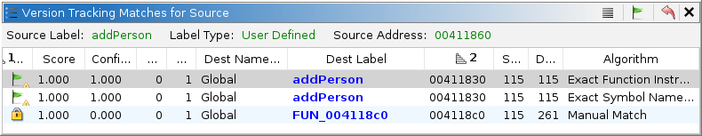
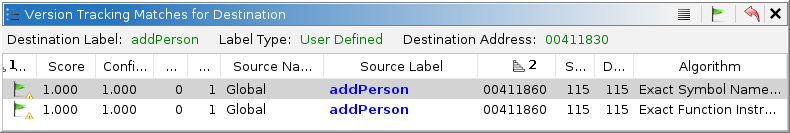

Version Tracking Related Matches Table
Related Matches
The Related Matches table is a dockable window that is available in both the Version Tracking Source Tool and Destination Tool. By default it appears as a small window in the bottom right corner of the tool. It shows a list of potential matches for the function or data where the cursor is currently located within the tool's listing. This match information is generated by the correlators chosen by the user.
The Related Matches Table provides fields with the same information as those in the Matches Table. For a description of the table characteristics, see that table. The main difference between this table and the Matches Table is that this table only displays the matches related to the current function or data.
Version Tracking Matches For Source
In the Source Tool the Related Matches table shows all correlator or manually generated matches for the single function or data that is currently active in the Source Tool. Likewise the Related Matches table in the Destination Tool shows all correlator or manually generated matches for the single function or data that is currently active in the Destination Tool.
The following image shows an example Related Matches table from a Version Tracking Source Tool.
 The information above the table indicates the name and address for the current tool's function or data. In the Source Tool if the cursor is within a function then the information above the table shows the current source function's name and entry point address. In this case, our cursor is in the function addPerson in the Source Tool.
The table itself contains a row for each of the matches (if any) for the current function or data. Each table row shows the name and address of each possible match in the Destination Tool, along with other match information. In this case, correlators have found more than one potential match to the current function in the Source Tool. These matches might be entirely different functions or the same function but found with different correlators. In this example, the user decided that "addPerson" in the source program matched function addPerson in the destination program. It has already been accepted by the user as the correct match. Therefore both rows that indicate a match to the same destination function are marked accepted. By definition, there can only be one accepted match per function.
Selecting a row in the Related Match Table causes the Destination Tool to navigate to that selected destination address.
Version Tracking Matches For Destination
The Destination Tool has its own Related Matches table. This has information for the function or data where the cursor is currently located in the Destination Tools listing. Each row of this table indicates a match to a source function. The following shows the related matches in the Destination Tool that are related to what was selected above in the Source Tool's table.
 In this case the Destination Tool's cursor is in function addPerson. There are two matches displayed in the table which are to the same source address but were arrived at by different correlation algorithms.
Actions
Select Match in VT Matches Table
As you select various matches in either Related Matches table, the other (source or destination) tool will navigate to the function or data associated with the match. However, the selected match in the Version Tracking Matches table will remain the same. To force the selection in the Version Tracking Matches table to match selection in the Related Matches table, use this action. This action can be initiated as follows:
Select a match in the Related Matches table and do either of the following.
- Click the toolbar button,
.
- Right-click on a row in the Related Matches table to get a popup menu. From the popup menu choose Select Match in VT Matches Table.
Either of these will cause the same match to be selected in the Version Tracking Matches table. When the match becomes selected in the Matches table, the Markup Items table will update to show the items for that match and the markup items will be marked with colors in the listings.